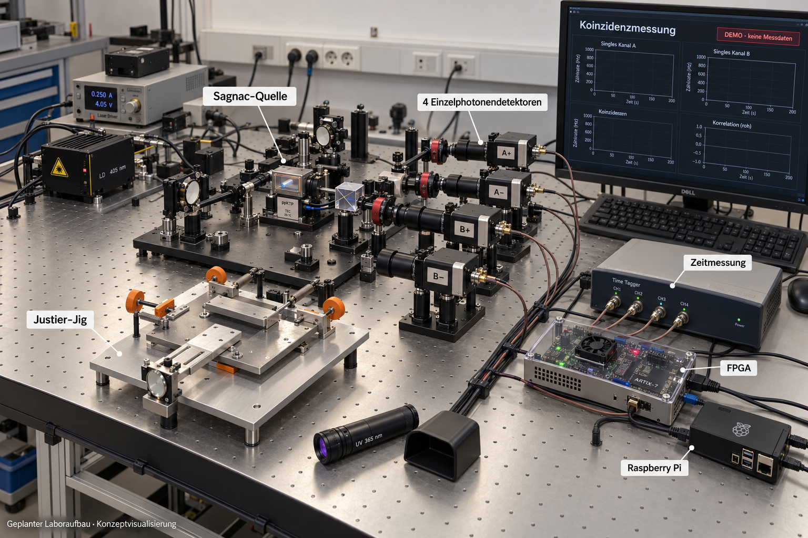

LOKAL INSTALLIEREN
Gemeinsamer Workflow
Signal-, Spektral- und RAX-Läufe lokal ausführen, Ergebnisse exportieren und nachrechnen. Die Anleitung führt durch Einrichtung und Start.
Workflow einrichten →OPEN RESEARCH · PUBLIC PREVIEW
X6 Spectral Astrolabium ist ein offener Forschungshub für Signale, Graphen und kausale Ordnungen. Beginne mit einem Browserexperiment, erkunde einen Forschungszweig oder rechne eine endliche Referenz nach.

KI-Konzeptvisualisierung, kein Foto eines aufgebauten Experiments. Optik, Geräte und Anzeigen sind illustrativ; der Aufbau liefert noch keinen experimentellen Nachweis für RAX-CQG.
Versuchsplanung und Prinzipschema ansehen →NEU · CAUSAL-SET BENCHMARK 0.2.0 · 16.10.2026
Repariertes Forschungslabor für endliche kausale Ordnungen: echte Spektren, Intervallzählung, Rohdaten und reproduzierbare Gegenprüfungen.
Explorativer Software-Prototyp, keine validierte Quantengravitation. Die Architektur v0.1 bleibt ein Forschungsentwurf; CQG-01–08 sind nicht als vollständige Testkampagne ausgeführt.
Die beiden Browseranwendungen starten direkt oben. Diese Einstiege führen zu den passenden Anleitungen, Voraussetzungen und dokumentierten Prüfungen.
LOKAL INSTALLIEREN
Signal-, Spektral- und RAX-Läufe lokal ausführen, Ergebnisse exportieren und nachrechnen. Die Anleitung führt durch Einrichtung und Start.
Workflow einrichten →ASTROLABIUM · TAB 07
Synthetische Beispieldaten und SGNCv007-Aufzeichnungen im Astrolabium prüfen. Die lokale Bridge benötigt Python; eine optische Gerätesteuerung ist damit nicht nachgewiesen.
Sagnac-Anleitung öffnen →LOKAL NACHRECHNEN
Versionierte Referenzpakete und zehn dokumentierte Offline-Berichte. Folge der Anleitung für Download, Voraussetzungen und reproduzierbare Berechnung.
Referenzedition öffnen →LOKALES NODE.JS-BEISPIEL
Einen begrenzten Signalauftrag lokal ausführen, exportieren und erneut prüfen. Ein ausführbares Referenzbeispiel für den Einstieg in Edge-Workflows.
Edge-Beispiel ansehen →01
Was wird untersucht, und was sagen die Ergebnisse tatsächlich aus? Ein verständlicher Einstieg in die Forschung und ihre Grenzen.
Das Projekt verstehen →02
Erkunde Signale und Graphen im Astrolabium oder vergleiche Referenzfilter im Signal Lab. Synthetische Beispiele zeigen Ergebnisse und Gegenbeispiele.
Ein erstes Experiment starten →03
Folge gepinnten Quellen, rechne dokumentierte Ergebnisse nach und prüfe die nächste Abnahme. Negative Ergebnisse bleiben sichtbar.
Nachrechnen und überprüfen →AKTUELLER FORSCHUNGSSCHWERPUNKT
Die vollständige exakte Prüfung von 2.045 kausalen Ordnungen mit sieben Elementen widerlegt die H7-Hypothese mit zwei Zählgrößen: Zwei nichtisomorphe Paare bleiben. Alle Gegenbeispiele sowie getrennte Enumerations- und Algebra-Prüfungen sind verfügbar. Der endliche Befund belegt keine physikalische Theorie.
Die vollständige n=7-Prüfung ansehen →Das Register vom 2026-10-16 beschreibt 39 Module. Es dokumentiert Quellenorte und Evidenz; es ist kein Live-Prüfsiegel.
Vollständiges Quellen- und Evidenzregister · JSON
Das konfigurierte Agentenfenster schliesst Sonntag, den 18. Oktober 2026, ein. Das exklusive Ende unten begrenzt den Zeitplan und belegt keine Ausführung. Danach ist das Fenster geschlossen.
· 2026-10-18T22:00:00Z